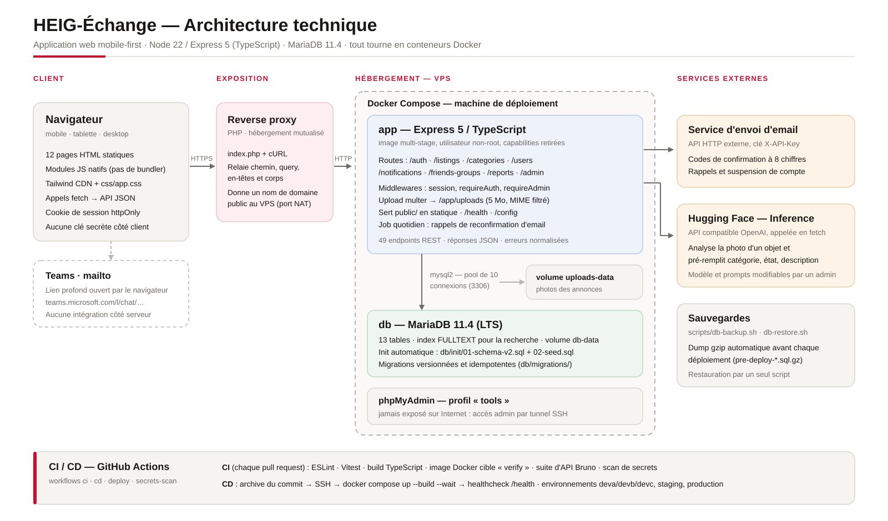
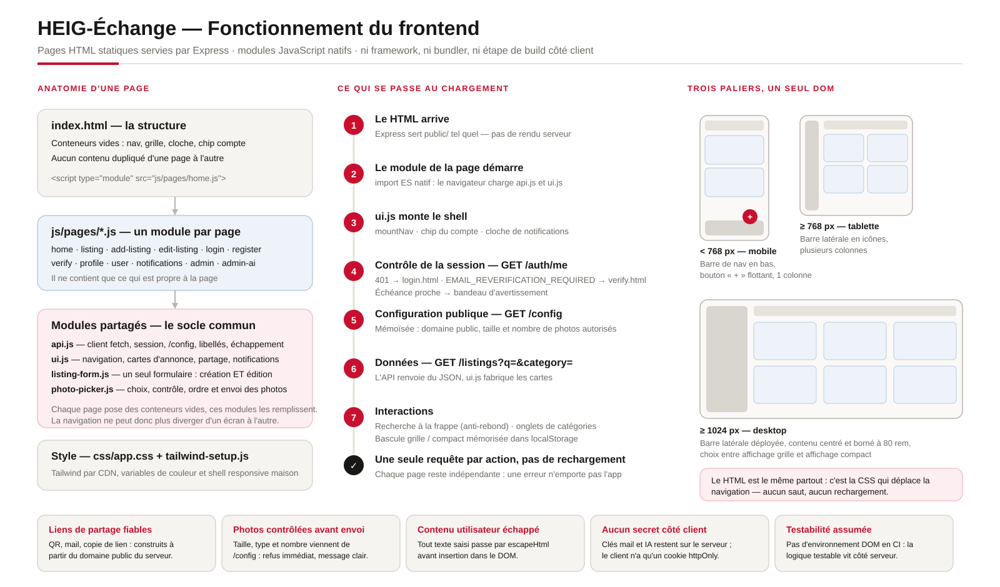
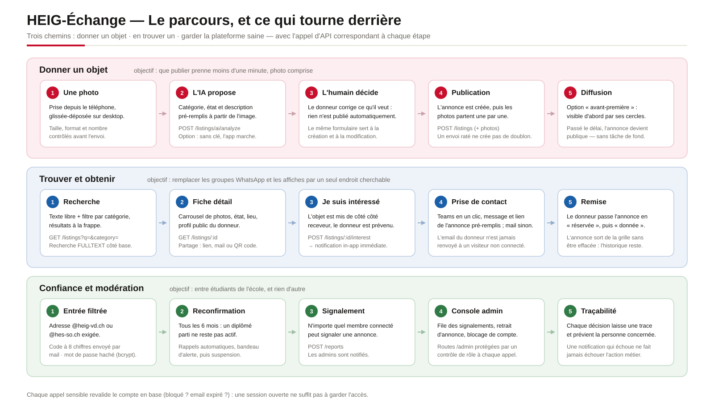
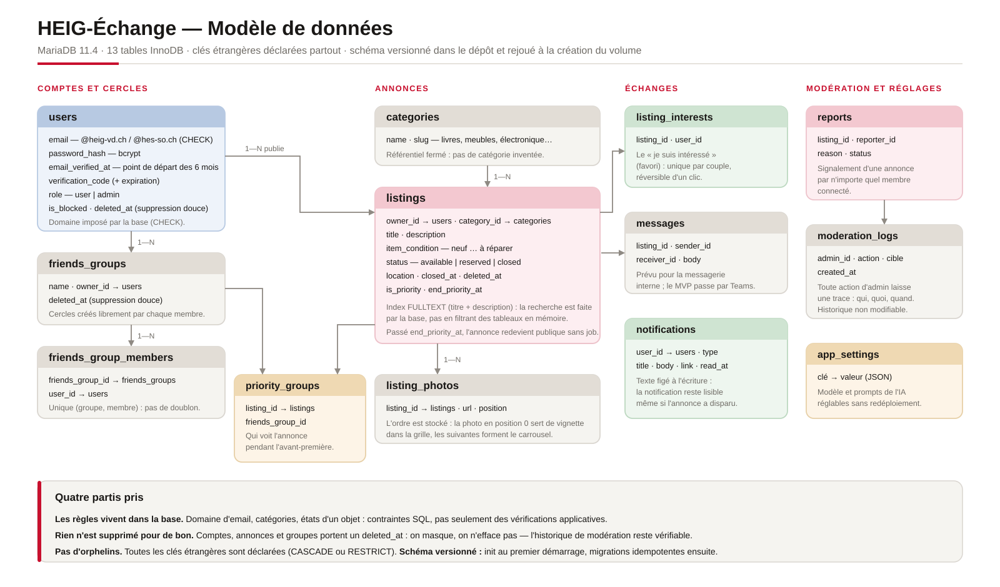
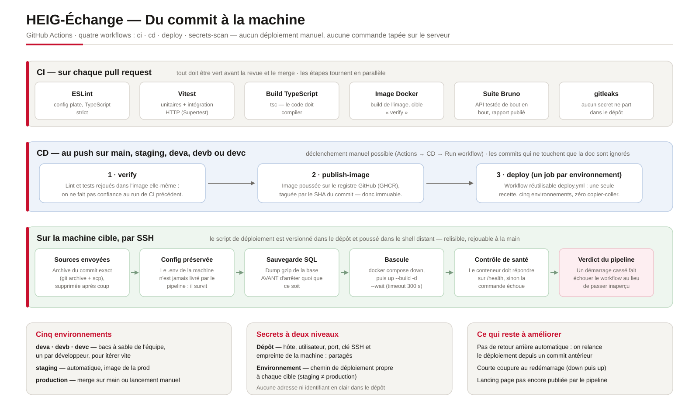

HEIG-Échange — visuels de présentation
Page d'aperçu. Les fichiers .svg du même dossier s'insèrent directement dans PowerPoint
(Insertion → Images → à partir de cet appareil).
architecture.svg — architecture technique et briques du projet

frontend.svg — fonctionnement du frontend

parcours-fonctionnel.svg — parcours utilisateur et appels d'API

modele-donnees.svg — modèle de données MariaDB

pipeline-ci-cd.svg — du commit à la machine
